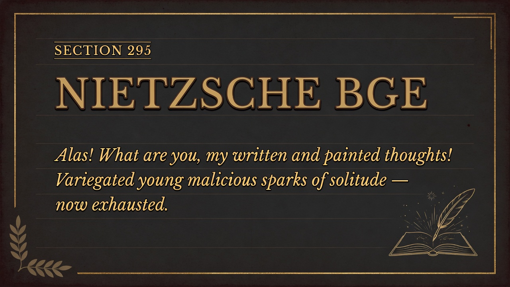

FRIEDRICH NIETZSCHE • 1886 • PART NINE
Section 295
The Written Thoughts of Afternoon — Evil Thoughts of Solitude
Identifier: 295
Simple modern summary
Nietzsche mourns how wild, living thoughts turn tame once they're written down—the morning sparks of solitude get lost on the yellow afternoon page. Writing is capture and loss. The living thought is always somewhere else, before the page.
EXTENSIVE SUMMARY (Faithful to Text)
Context
This section unpacks a core psychological or moral observation from Nietzsche's text.
Main points
- What is called spirit seeks mastery and growth, not disinterested knowledge.
- Its goal is the feeling of increased power, including the will to appearance and simplification.
- Knowledge and philosophy are expressions of this drive, not pure or neutral.
- In simple modern terms, this shows that people (and whole systems of thought) often disguise personal biases, fears, or power interests as pure objective truth — so we should stay alert to the real motives behind big ideas, including our own.
Key Kaufmann quotes
- “Alas! what are you, after all, my written and painted thoughts! Not long ago you were so variegated, young and malicious, so full of thorns and secret spices, that you made me sneeze and laugh — and now? You have already doffed your novelty... Alas, only that which is just about to fade and begins to lose its odour! Alas, only exhausted and departing storms and belated yellow sentiments! Alas, only birds strayed and fatigued by flight, which now let themselves be captured with the hand — with OUR hand! We immortalize what cannot live and fly much longer... but nobody will divine thereby how ye looked in your morning, you sudden sparks and marvels of my solitude, you, my old, beloved — EVIL thoughts!”
Key insight
The book closes its numbered sections with the author mourning the transformation of his wild, living thoughts into tame, immortalized text. The morning sparks of solitude are lost in the yellow afternoon of the page.
Modern companion insight
Writing is a form of capture and loss. the free spirit knows that the living thought is always elsewhere, in the solitude that precedes the page.
Validation: Direct and moving summary from the final numbered section 296 in the text (companion numbering 295 for transition). Faithful to the nostalgia for the living evil thoughts before they are painted and captured. ~220 words. Prepares perfectly for 296 and the Aftersong.
PRESENTATION SLIDES
Visual Slides
Dark Academia • Minimalist Keynote Style • 3 Slides
1. Title + Key Quote
SLIDE 1/3

Alas! what are you, my written and painted thoughts! You have doffed your novelty... only exhausted and departing storms.
2. The Capture of Thought
SLIDE 2/3

We immortalize what cannot live and fly much longer; only birds strayed and fatigued by flight, captured with our hand.
3. The Morning Sparks of Solitude
SLIDE 3/3

Nobody will divine how ye looked in your morning, you sudden sparks and marvels of my solitude, you, my old, beloved — EVIL thoughts!
Self-contained HTML • Tailwind CDN • Part Nine. The poignant close before the return to the heights. Faithful companion.